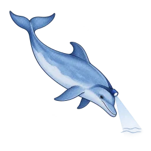

Following the changes
We check sources, record observed events and show the review status so a missing read never looks like no change.
Dolphin detectives are our research companions. Observation times and review status remain with the evidence.

How monitoring works
Follow one exact thing
Save an exact token address, issuer or protocol market. We record a baseline first, then report only material changes in that same target. Read-only share links never expose the owner key.
What changed in the real world
A readable record of issuer, venue, protocol and source changes, plus exact token addresses entering or leaving our catalogue. “Entered” means we first had enough evidence to catalogue that address; it does not mean the token was issued that day. Our own research corrections and transient collection failures are not published here. Changes are grouped by likely holder impact first, then newest first inside each group; watcher severity remains visible separately.
Catalogue & source operationsOpen watched URLs, availability and per-issuer source state
Sources we watch
One row per URL we rely on, keyed by the hash of the URL, which is
also the folder its fetched copies live in. A fetch that comes back byte-identical only
moves last checked; a fetch with new text writes a version, diffs it
against the previous text and can raise a change event. A blocked or missing
document is a state, not a silence — a host that refuses us
(blocked) and a document that has gone (gone) are both counted
here rather than quietly dropped, because "we could not read it" must never look like
"nothing to report".
Per issuer
Click an issuer to see the documents themselves, worst state first.
The source registry keys three issuers by a token-suffixed slug
(bullish-blsh for bullish), which this page folds back onto the
dossier's own slug so one issuer is one row.
Detailed observation feedOpen raw before/after events and filters
Detailed observation feed
Newest first. The severity is the cheapest signal that fired: a lost claim quote is a warning with no model involved, a diff touching redemption, custody, governing law, freeze, pause, clawback, authority or eligibility is a caution, and anything softer is information. Every row carries the evidence it was read from — the source version for a document diff, the account and slot for an on-chain change, the two snapshot dates for a market move. The default order is holder impact first, then recency. Where a model has read a document change, its model assessment sits under the diff it read: a second opinion beside the evidence, never a replacement for it.
Evidence coverageOpen freshness, missing claims and research operations
Evidence freshness, issuer by issuer
How much of what we say about an issuer is the source's own words. Confirmed means the quote was found verbatim in the document; inference means it is our reading rather than anyone's words; unverified that it is recorded but not yet found verbatim — and an unverified claim is never counted as a confirmed one. A claim whose quote later disappears becomes changed, not false: a human decides. Click an issuer to open its dossier.
Look up a claim
Pick an issuer and, if you like, type part of a field path
(redemption, custody, fees). Each row is one fact:
its status, the quote it rests on, the document and the exact locator inside it, and when
it was accessed, recorded and last checked. The field filter matches here in the page
rather than in SQL, because the API's field parameter is an exact match and
nobody knows a dotted field path by heart.